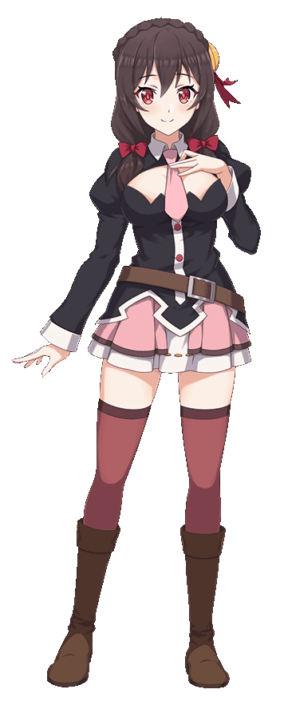
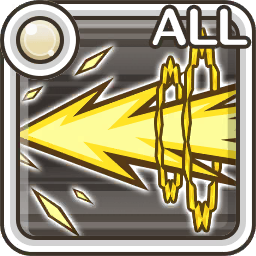

|
|  | Amiga y rival autoproclamada de Megumin, también es una archimaga del clan Crimson Demon. A menudo da algunos discursos de chunibyo debido a su personalidad y a que tiene un sentido común inusual. A pesar de no tener muchos amigos, consigue nuevos amigos en el camino. |
|  |
4★ Hermana mayor adorada
4★ Enfrentamiento de baño
4★ Amigo de Megumin
4★ Memorias de la Academia Mágica
4★ Truco o Amigos
3★ Juego divertido en la playa
3★ Actuación de cuerpo completo
3★ Buscando amigos
3★ Tamaño perfecto
3★ Orgullo del rival
3★ Despertar de un sueño
2★ Mago del arco
2★ Aldea del Demonio Carmesí
1★ Entrante